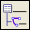

Open the Electrical Connection Navigator .
Make sure the HARNESS node is expanded.
To select all of the connections in a column, right-click any column heading and choose Select All.
Under the HARNESS node, right-click any highlighted row and choose Status Report.
Notice that there are a total of thirty connections and all were made automatically.
Close the Information window.